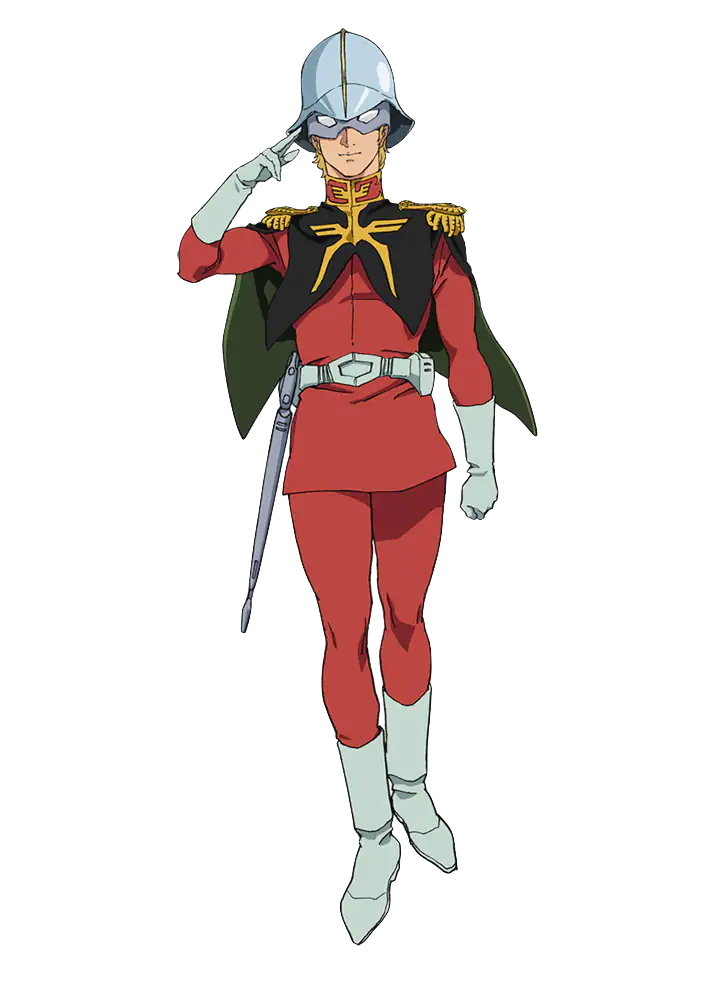
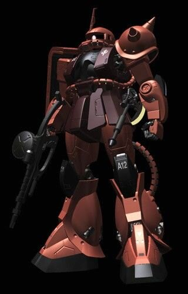

Char Aznable
Information
Story
Age : 20 (at first appearance)
gender : male
Height : 180cm
Nationality : Principality of Zeon
Birthday : 57/November/17th
Favorite food : Salad
Hobby : None
Personality : Confusing
Char Aznable, a skilled pilot in Zeon's military, seeks revenge for his father's death. He fights the Earth Federation, becomes a leader of the AEUG during the Gryps Conflict, and is a complex and tragic character.
 